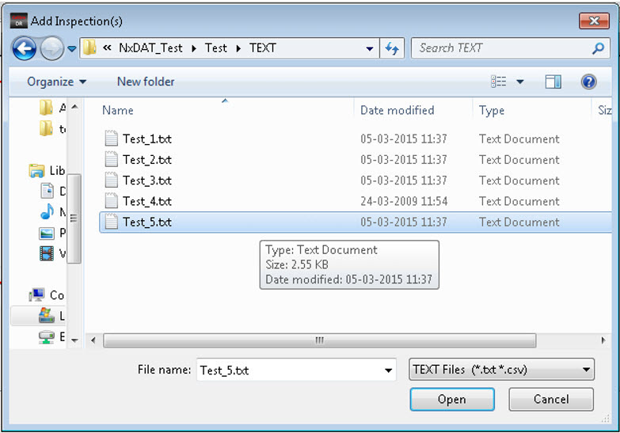

You can use Calibre
DefectReview to open multiple inspection files.
Procedure
- Select one of the following:
In the Calibre DefectReview
menu bar, select File > Add Inspection(s).
Click the Add Inspection(s) icon
in the Calibre DefectReview toolbar (see Figure 1).
Figure 1. Add Inspection(s)
Icon
- An Open Inspection(s) dialog
box appears as shown in the Figure 2. Select the desired files and click Open.
- You can load different types
of inspection files in Calibre DefectReview (for example, text files
and CSV files) at the same time.
- As the different types of
inspection files may have conflicting classification codes in the All
folder, Calibre DefectReview deactivates the Defect Selection and
Classification options in the All folder. In the All Folder, the
classification option is also deactivated for the Defect Map and
Repeatability Analysis windows.
Figure 2. Open Inspection(s)
Dialog Box